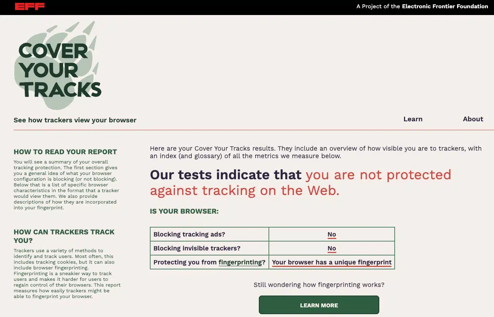
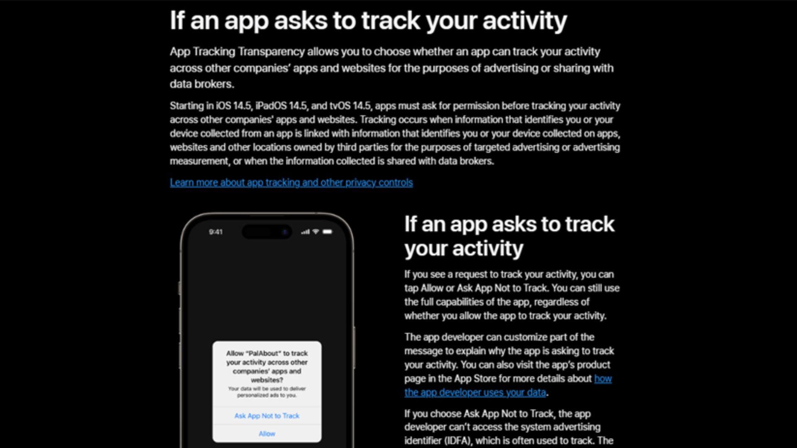
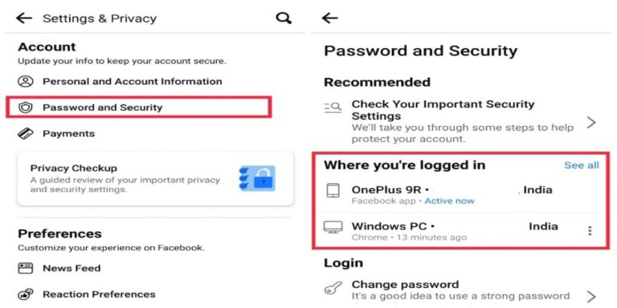
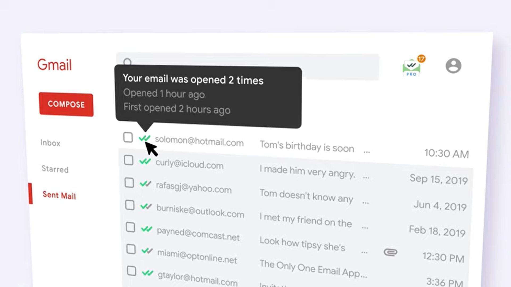

What Is An IP Address?
Internet Protocol (IP) address is the unique identifying number assigned to every device connected to the internet. An IP address definition is a numeric label assigned to devices that use the internet to communicate. Computers that communicate over the internet or via local networks share information to a specific location using IP addresses.
When people think of online tracking, they often imagine websites identifying them by their IP address. In today’s digital world, companies, advertisers, and even governments have far more advanced methods to track users—methods that go well beyond your IP.
Browser Fingerprinting
Websites can collect detailed information about your browser and device settings—such as screen resolution, installed fonts, and plugins—to create a unique "fingerprint" that identifies you across sessions.
Example: This is a result from Cover Your Tracks, a tool by the Electronic Frontier Foundation (EFF). It shows that the browser has a unique fingerprint, meaning trackers can recognize and follow the user—even if cookies are blocked.
Device and App Tracking
Mobile phones are especially vulnerable. Apps can collect data such as your location, usage habits, contacts, and even motion. Advertisers use something called device identifiers (like Apple’s IDFA or Android’s Advertising ID) to track users across apps and services—even if they’re not using a browser.
Example: Apple’s App Tracking Transparency feature (introduced in iOS 14.5) requires apps to request user permission before tracking their activity across other companies' apps and websites. This gives users more control over how their data is collected and used for advertising.
Account-Based Tracking
When you're logged into an account (e.g., Google or Facebook), your activities can be tracked across devices and sessions, regardless of your IP address.
Example: Facebook’s “Where you’re logged in” feature shows the devices and locations where your account is currently active. This helps you detect suspicious logins and secure your account by changing your password or logging out remotely. 
Email Tracking Pixels
Invisible pixels in emails notify senders when you open messages. Learn more at Mailsuite.
Example: tracking feature in Gmail displays when and how many times a sent email was opened. When the sender hovers over the double checkmark beside a recipient’s email, a pop-up appears showing detailed information such as “Your email was opened 2 times,” along with timestamps for when it was first and last opened. This helps users confirm that their emails have been read and track engagement.
Sources: